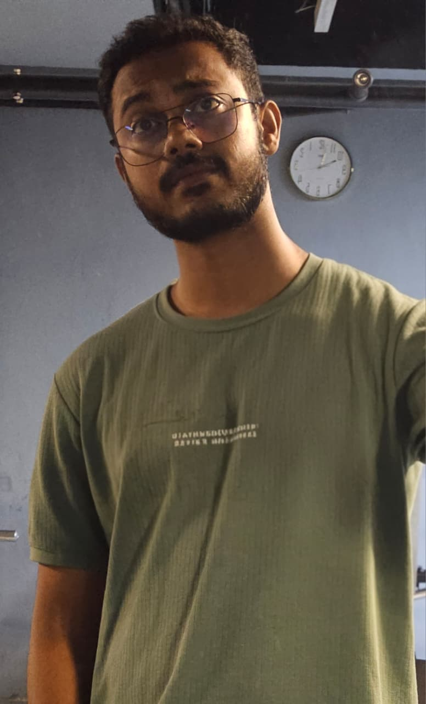

Bridging Biology & Computation with Multi-Omics Pipelines
Bioinformatics researcher focused on WebDev, Tools Development, and Data Science in genomics and multi-omics analysis. Currently pursuing M.Sc. in Bioinformatics at Jamia Millia Islamia (CGPA: 9.68), and conducting research at BRIC-NIPGR on plant peptide databases and machine learning classification.

Highly motivated bioinformatics researcher focused on WebDev, Tools Development, and Data Science in the context of genomics, multi-omics analysis and computational biology. Currently pursuing an M.Sc. in Bioinformatics at Jamia Millia Islamia with a 9.68 CGPA. My work revolves around building efficient pipelines for DEGs identification, SNP and Indel analysis, along with a strong interest in tool development and structural biology (molecular docking and simulation) to derive meaningful insights from complex biological datasets.
Currently working at BRIC-NIPGR, New Delhi, on developing a plant-dedicated peptide database and building a machine learning model for plant peptide ORF classification (true vs false ORF prediction).
Advances in Protein Chemistry and Structural Biology
Ali, A. M., Shah, S. N., Rizwee, F., et al.
Read PublicationContributing to the structural biology perspective of digital health, focusing on the integration of protein chemistry data into patient-centric digital frameworks.